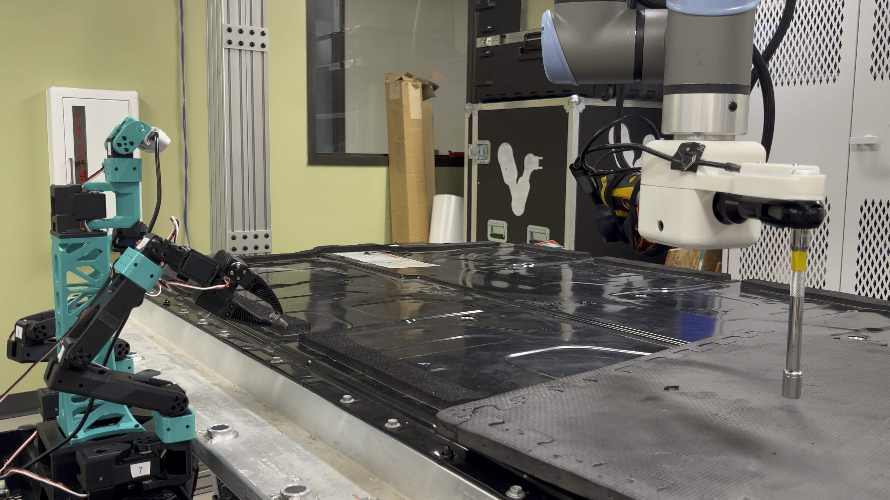
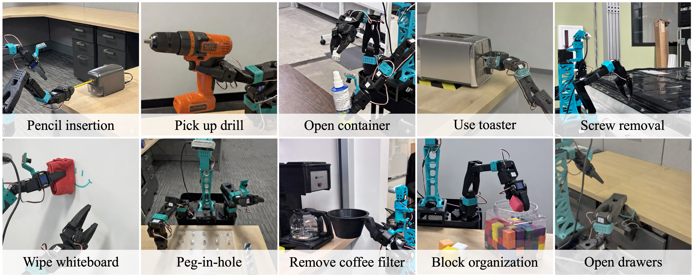
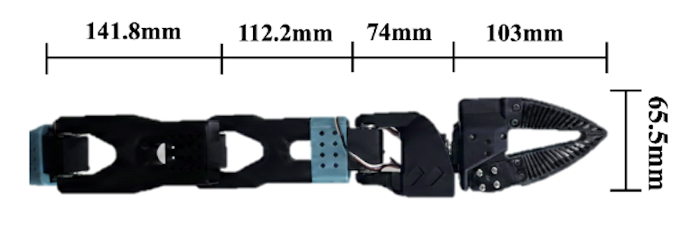
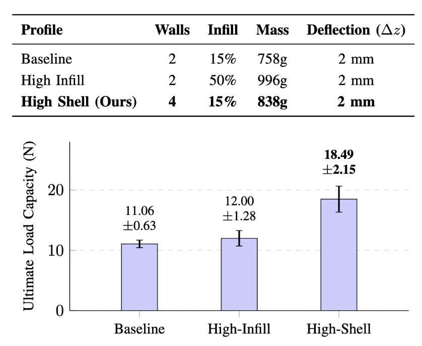
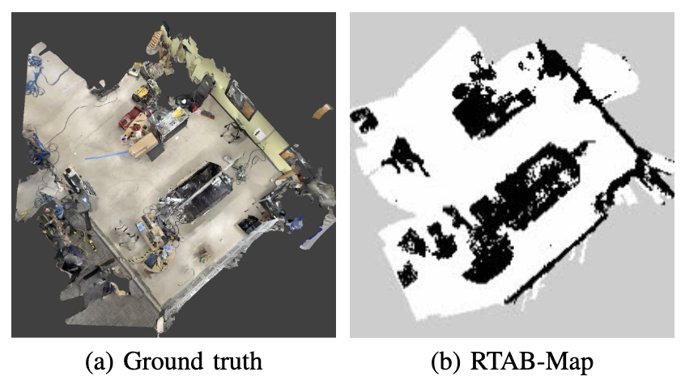
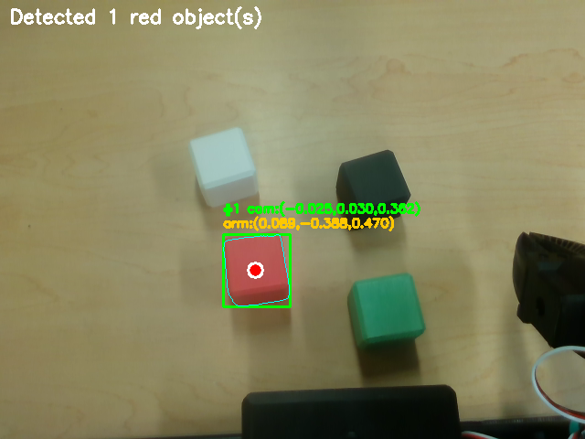
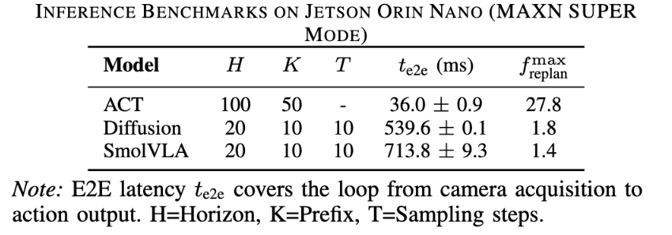

Democratizing Embodied AI.
XLeRobot-Pro is a highly capable, $1,200 bimanual mobile manipulator. Designed for researchers and labs to rapidly deploy imitation learning, VLA models, and autonomous robotic agents.

Why XLeRobot-Pro?
Advanced robotics research has long required six-figure hardware. XLeRobot-Pro closes the gap between simulation and the real world with a rugged, easy-to-reproduce platform.
It's mostly 3D-printed and built from affordable, off-the-shelf parts on a mobile base — so labs can scale up data collection and run fleet-level reinforcement learning on a modest budget.
System Capabilities
Native integration with the Hugging Face LeRobot framework allows for out-of-the-box data collection and policy training. See the system in action below.

Bimanual Teleoperation
Smooth leader-follower kinematics using dual SO-101 arms for high-fidelity dataset collection.
Autonomous Execution
Built-in SLAM execution capabilities for autonomous mapping.
Hardware Architecture
Designed for Modularity
Swap compute nodes, upgrade sensor suites, or tune the chassis to fit your specific research needs.
SO-101 Arms
Providing high-fidelity 6-DOF movement for complex bimanual manipulation tasks.

Fin-Ray End-Effectors
Enabling precision and compliant grasps across a wide variety of unstructured objects.

Functionally Graded Chassis
Ensuring structural stability and vibration damping during dynamic mobile operations.

Compute Deck + Sensor Suite
Centralizing processing power and multi-modal perception for real-time autonomous decision making.

Software Stack & Algorithms
The XLeRobot-Pro utilizes a hybrid approach, merging precise classical robotics control with state-of-the-art end-to-end learning models.
Inverse Kinematics (IK) via Pink
Leveraging the Pink (Pinocchio-based Inverse Kinematics) library to translate high-level spatial objectives into precise, singularity-robust joint movements in real time.

SLAM & Navigation
Implementing a ROS 2 pipeline using RTAB-Map and a RealSense D435 for visual odometry and localization. Global planning and closed-loop execution are handled by Nav2 utilizing 2D costmaps.

Visual Perception
Extracting critical visual features via HSV thresholding and contour detection to isolate target objects, providing real-time geometric priors for upstream algorithms.

LeRobot Integration
Native support for the Hugging Face LeRobot framework, streamlining the pipeline from standardized data collection to end-to-end policy training (e.g., Action Chunking with Transformers).

Hardware Overview & Specifications
XLeRobot-Pro is a dual-arm mobile robot built from affordable, widely available components. Below covers the physical system requirements and limitations.
System Specifications
Known Limitations
See the Build Guide for more details.
Credits & Acknowledgements
Project Creators
Artemis Shaw, Chen Liu, Justin Costa, Rane Gray, Alina Skowronek, Kevin Diaz, Nam Bui, Nikolaus Correll.
Core Frameworks
- LeRobot: Built upon the foundational work of the Hugging Face LeRobot team.
- XLeRobot: Referencing the architectural design and initial implementation by Vector-Wangel.
Ready to start?
Start Building ↗